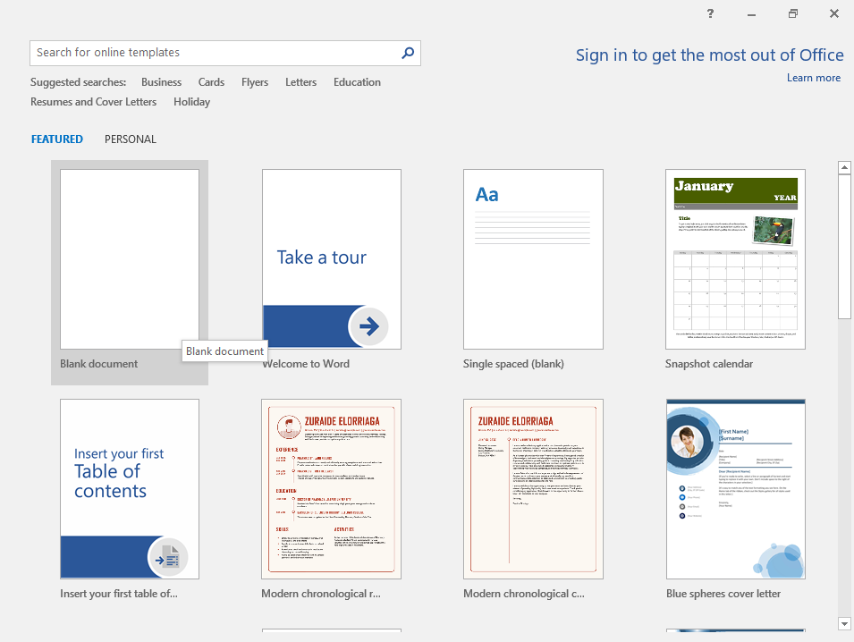
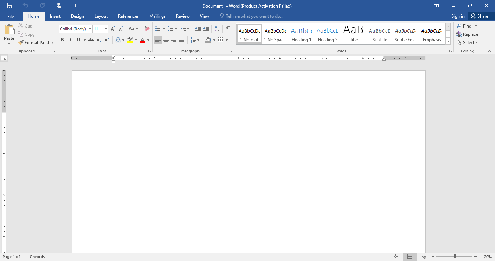
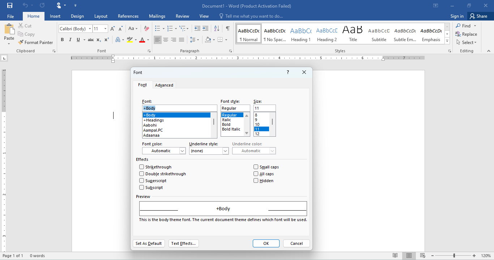
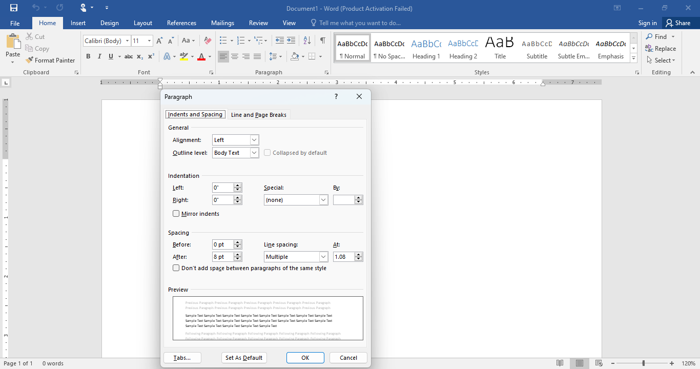
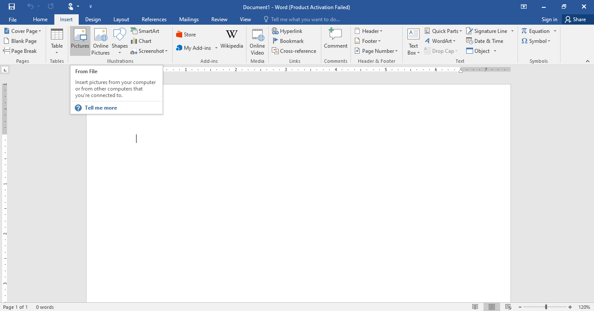
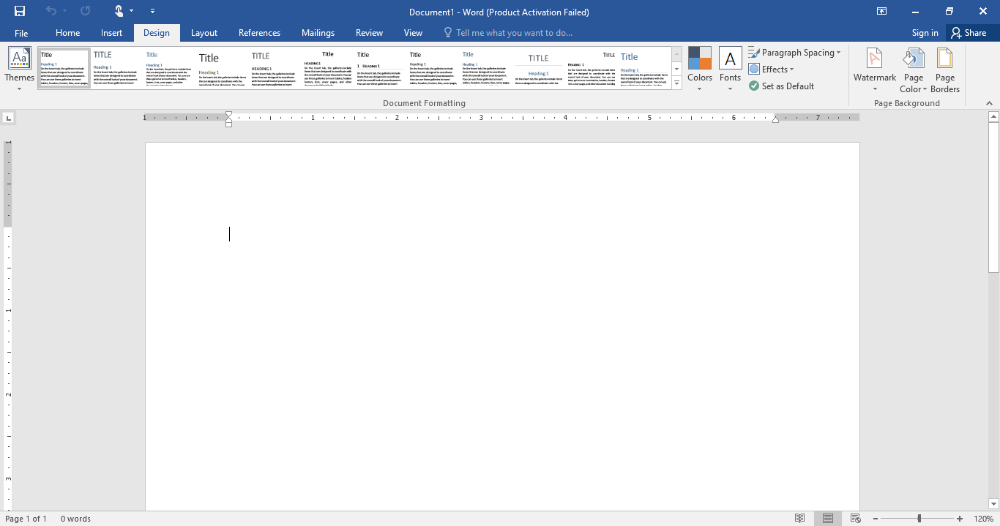
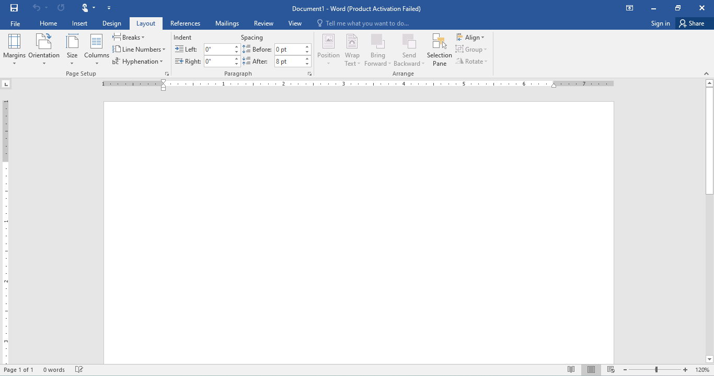
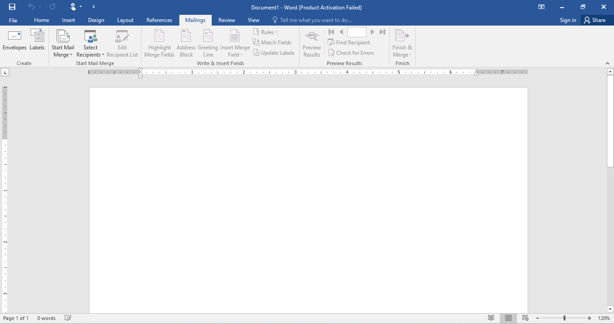

Learn Microsoft Word 2016
Master the art of creating professional documents using Microsoft Word. Follow these simple steps to understand the interface and tools used for document formatting and design.

Master the art of creating professional documents using Microsoft Word. Follow these simple steps to understand the interface and tools used for document formatting and design.
Start Microsoft Word and select “Blank Document” to begin creating your file.


Use the Home tab to change font styles, alignment, borders, and text formatting.
Click the small arrow in the bottom-right of the Font group to open detailed text settings.


Access paragraph spacing, indentation, and alignment options using the Paragraph section arrow.
Use the Insert tab to add tables, pictures, shapes, charts, and other elements to your document.


Customize your document with design features such as themes, page colors, and watermarks.
Adjust page margins, orientation, size, and spacing in the Layout tab.


Use the Mailings tab to create envelopes, labels, and send documents to multiple recipients.